Overview
Executive Summary
The core challenge of EchoYeast is to rapidly and reproducibly screen, from 17 nanobody sequences, the recognition element with the highest specificity for H1N1 HA and the lowest cross-reactivity risk, and to further validate the molecular mechanisms of two gating systems (hM1Dq and Ste2).
We established a computational-first / model-guided multiscale molecular docking and simulation pipeline:
- Structure prediction using AlphaFold2/ColabFold;
- Initial screening by multi-antigen rigid docking with ClusPro;
- Semi-flexible refinement with HADDOCK 2.5;
- Interface analysis with PyMOL + SPICE;
- 100 ns MD with GROMACS;
- Binding free energy calculation and per-residue decomposition with gmx_MMPBSA;
- Positive control redocking with 9VH4;
- Parallel modeling of the Path A (hM1Dq) and Path B (Ste2) gating systems.
By combining multiple orthogonal computational methods, we reduced the 17-candidate nanobody pool to a single lead (R1aB6) and identified a testable mutational hypothesis (R31A). Crucially, our model-guided design of the Ste2 gating construct was successfully translated into a living yeast chassis and verified via colony PCR and sequencing, completing the dry-to-wet lab design loop. This provides a prioritized experimental roadmap rather than a replacement for wet-lab validation.
Key conclusions:
| Item | Conclusion |
|---|---|
| Optimal nanobody | R1aB6 |
| ClusPro specificity index | −93.25 (1 / 17) |
| Best HADDOCK cluster | Cluster 5, score −93.2, RMSD 0.7 Å |
| 100 ns MD | Full-segment RMSD 0.4974 nm, interface residue RMSF < 0.25 nm |
| MM-GBSA ΔGbind | −14.67 kcal/mol (Cluster 1) / −14.39 kcal/mol (Cluster 5) |
| Key hotspot | ARG-B:31 (−5.46 kcal/mol) |
| Positive control | i-RMSD = 2.113 Å |
| Path A best gating peptide | MT1 (hM1Dq × MT1 Cluster 1, score −83.3) |
| Path A coupling interface | hM1Dq ICL2/ICL3/H8 ↔ Gpa1 α5 C-terminus (single-chain Cluster 1, score −149.4) |
| Path A membrane MD ΔTOTAL | −40.37 ± 1.27 kcal/mol |
| Path B best gating peptide | pep5 (Ste2 × pep5 Cluster 1, score −99.2) |
| Path B membrane MD ΔTOTAL | −31.43 ± 3.46 kcal/mol |
Important Statement: Except for the Ste2 gating construct assembly reported in B.8, all computational data on this page are derived from molecular modeling and have not yet been validated by wet-lab experiments. The ultimate value of the model lies in providing testable hypotheses (the ARG-B:31 hotspot and the R31A mutant) and prioritization for subsequent experiments.
Wet-Lab Translation: The model-designed Ste2 gating construct (pep + nanobody) was successfully assembled in yeast and verified by sequencing (96.9% identity).
1. Motivation and Design Need
EchoYeast requires a nanobody that specifically recognizes the hemagglutinin (HA) of influenza A (H1N1) virus with minimal cross-reactivity. We have 17 candidate nanobody sequences, but none of them have experimental structures in the PDB; moreover, screening them one by one by wet-lab experiments is both time-consuming and expensive.
Therefore, the model must answer the following scientific questions:
- Among the 17 candidate nanobodies, which one has the optimal binding ability and specificity for H1N1 HA?
- What is the binding mode between this nanobody and H1N1 HA? What are the key hotspot residues?
- In the two gating systems hM1Dq and Ste2, how do the auto-inhibitory peptides bind the receptor? How does Gpa1 couple?
- Which candidates should be prioritized for wet-lab experiments? Which should be eliminated?
We adopt a computational-first / model-guided strategy, using multiscale computational models to guide experimental design rather than replace experiments.
2. System Overview and Modeling Logic
2.1 Three main lines
Part 1 (Common Foundation): HA × nanobody docking — screening R1aB6
├── Path A (hM1Dq gating system): hM1Dq + MT1 + humanized Gpa1
└── Path B (Ste2 gating system): Ste2 + auto-inhibitory peptides + Gpa1
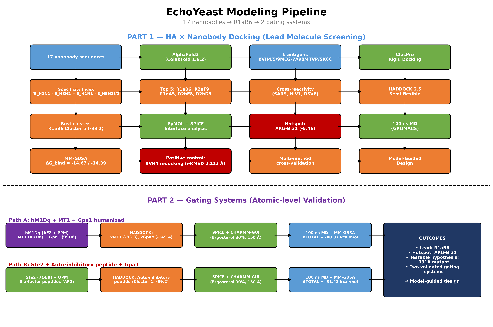
2.2 Logic Chain
Question (Which nanobody is optimal?) → Hypothesis (rigid + semi-flexible + MD can converge candidates) → Methods (ClusPro → HADDOCK → PyMOL/SPICE → 100 ns MD → MM-GBSA) → Outputs (specificity index / HADDOCK score / interface residues / RMSD / ΔGbind / hotspot residues) → Validation (positive control redocking + multi-method cross-validation) → Design decision (select R1aB6, propose an R31A mutant).
2.3 Seven-Stage Method Workflow (Part 1)
The questions, methods, and outputs of the seven stages:
| Stage | Question Addressed | Method | Output |
|---|---|---|---|
| 1 | Which antibody binds H1N1 best? | ClusPro rigid docking (untreated antigen) | Specificity index ranking |
| 2 | Does antigen processing affect the binding mode? | ClusPro rigid docking (complex-processed antigen) | Cross-validation |
| 3 | What is the cross-reactivity risk? | ClusPro docking against SARS-CoV-2/HIV-1/RSV F | Average binding energy, risk level |
| 4 | Can the binding mode be refined? | HADDOCK 2.5 semi-flexible refinement | HADDOCK score, cluster, BSA |
| 5 | Which residues drive the interface? | PyMOL + SPICE | Contacts, hydrogen bonds, salt bridges, hydrophobic interactions |
| 6 | Is the complex stable under physiological conditions? | GROMACS 100 ns MD | RMSD, RMSF, Rg, hydrogen bonds |
| 7 | What are the binding free energy and hotspots? | gmx_MMPBSA + per-residue decomposition | ΔGbind, hotspot residues |
2.4 Rationale for Method Selection
Our pipeline adopts a physics-based strategy, prioritizing interpretability and reproducibility. ClusPro[1] was chosen for fast rigid-body screening[2] across 17 candidates. HADDOCK was selected for its semi-flexible[3] refinement, allowing CDR loop flexibility based on our AlphaFold2 pLDDT scores. Finally, GROMACS[5] with the Amber99SB-ILDN force field was used to capture the explicit-solvent dynamics, which is essential for accurate MM-GBSA calculations. This multi-scale approach ensures that our computational predictions provide an actionable roadmap for wet-lab experiments.
2.5 Gating System Pathways (Path A / B)
Each pathway follows a unified workflow: Structure preparation → OPM/PPM membrane alignment[11] → HADDOCK docking → SPICE analysis → CHARMM-GUI membrane system → GROMACS MD → gmx_MMPBSA.
Part 1: HA × Nanobody Docking (Recognition Element Screening)
1.1 Workflow Description
Scientific logic arrangement: antigen preparation → nanobody AF2 → ClusPro initial screening → HADDOCK refinement → SPICE interface → GROMACS MD → MM-GBSA → positive control → Card Game.
1.2 Antigen Structure Preparation
We used two antigen states for docking separately to evaluate the effect of antigen treatment on binding modes:
- Untreated antigen: downloaded directly from RCSB, retaining the native conformation.
- Complex-processed antigen: HA extracted from antibody–antigen complexes, with antibody chains and glycosylation removed, representing the bound-state conformation.
Processing workflow: remove antibody chains, glycosylation, water molecules, and heteroatoms; split HA1/HA2 into separate chains; unify chain IDs.
| Antigen | Strain | PDB ID | Source | Resolution | Retained Chains | Status |
|---|---|---|---|---|---|---|
| H1N1 HA | A/Puerto Rico/8/1934 | 9VH4 | RCSB | 2.80 Å | A = HA1, B = HA2 | Direct download + complex processing |
| H3N2 HA | A/Puerto Rico/8/1934-New York/55/2004 | 9VH5 | RCSB | 2.70 Å | A = HA1, B = HA2 | Direct download + complex processing |
| H5N1 HA | A/Jiangsu/NJ210/2023 | 9MQ2 | RCSB | 3.06 Å | A = HA1 (this entry deposited no HA2) | Direct download + complex processing |
| SARS-CoV-2 | — | 7A98 | RCSB | 5.40 Å | Complex extraction (cross-reactivity panel) | Complex extraction (cross-reactivity) |
| HIV-1 | — | 4TVP | RCSB | 3.10 Å | Complex extraction (cross-reactivity panel) | Complex extraction (cross-reactivity) |
| RSV F | — | 5K6C | RCSB | 3.58 Å | Complex extraction (cross-reactivity panel) | Complex extraction (cross-reactivity) |
1.3 Nanobody AlphaFold2 Prediction
The 17 nanobodies are 114–123 aa in length and have no His-tag or linker. Locally deployed ColabFold 1.6.2 was used for structure prediction. The predicted structures of the 5 candidates that entered refinement are self-hosted and shown in the card game below (single chain, produced by a structure-prediction model, not an experimental structure); scoring and refinement provide citable values only for these 5 (R1aB6, R2aF9, R1aA5, R2bE8, R2bD9).
Nanobodies with CDR3 pLDDT < 65 were set as flexible in HADDOCK:
| Nanobody | Average pLDDT | CDR3 pLDDT | Assessment |
|---|---|---|---|
| R1aA5 | 88.32 | 52.24 | CDR3 low |
| R1aB6 | 92.99 | 85.74 | Excellent |
| R1aE5 | 93.19 | 79.53 | Excellent |
| R1aE6 | 90.64 | 61.07 | CDR3 moderately low |
| R1aF4 | 93.35 | 87.46 | Excellent |
| R1aF5 | 93.12 | 88.51 | Excellent |
| R1aG5 | 92.59 | 87.38 | Excellent |
| R1aG6 | 93.34 | 88.81 | Excellent |
| R2aB9 | 88.73 | 55.90 | CDR3 low |
| R2aE8 | 92.11 | 81.58 | Excellent |
| R2aF9 | 93.68 | 83.50 | Excellent |
| R2aG8 | 88.04 | 61.63 | CDR3 moderately low |
| R2aG9 | 94.88 | 92.69 | Outstanding |
| R2aH9 | 95.25 | 93.15 | Outstanding |
| R2bD8 | 93.64 | 90.94 | Outstanding |
| R2bD9 | 90.82 | 58.56 | CDR3 low |
| R2bE8 | 92.48 | 84.77 | Excellent |
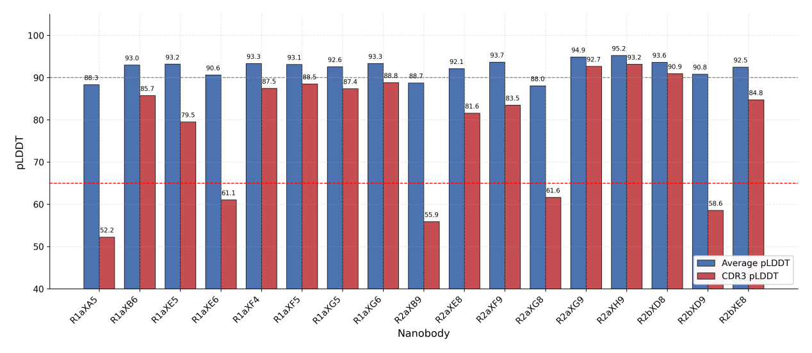
AlphaFold2/ColabFold[7][8] was utilized for initial structure prediction, leveraging its deep learning architecture trained with FAPE and cross-entropy losses to generate high-confidence models (pLDDT > 90) for downstream docking.
1.4 ClusPro Rigid Docking
- Scoring function:
E = 0.40Erep − 0.40Eatt + 600Eelec + 1.00EDAR
- Specificity index:
( EH1N1 − EH3N2 + EH1N1 − EH5N1 ) / 2A more negative value indicates better specificity for H1N1.
- Positive control: re-docking of the experimentally resolved 9VH4 complex serves as the control for the docking pipeline.
Stage 1 (untreated antigen, top 5). A more negative specificity index indicates that the candidate is more biased toward H1N1 relative to other subtypes:
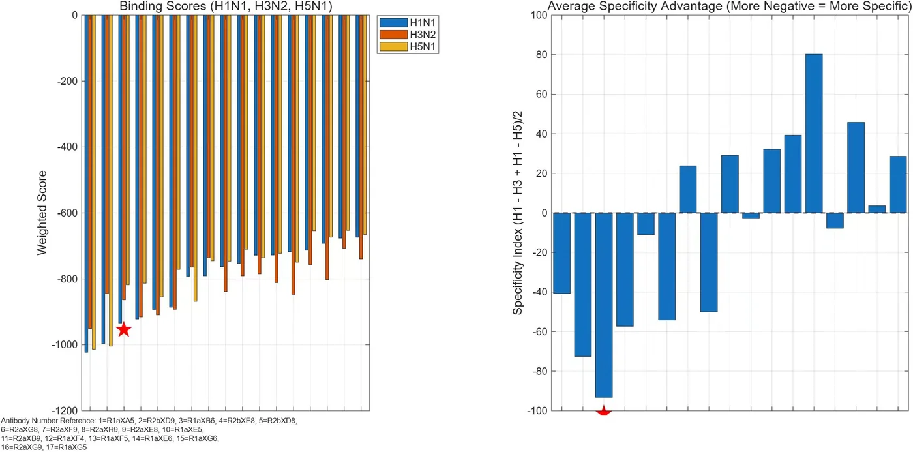
The 5 refined candidates' scores and specificity indices under the untreated antigen:
| Nanobody | H1N1 | H3N2 | H5N1 | Specificity Index | Priority Level |
|---|---|---|---|---|---|
| R1aB6 | −933.9 | −863.4 | −817.9 | −93.25 | Medium (Rank 3) |
| R2bD9 | −997.0 | −845.0 | −1003.9 | −72.55 | High (Rank 2) |
| R2bE8 | −921.7 | −915.6 | −813.1 | −57.35 | Low (Rank 4) |
| R1aA5 | −1022.7 | −950.5 | −1013.4 | −40.75 | High (Rank 1) |
| R2aF9 | −792.4 | −764.4 | −867.9 | 23.75 | Low (Rank 5) |
Stage 3 (cross-reactivity assessment). Cross-reactivity risk is expressed as the average binding energy of candidates against unrelated viral antigens (SARS, HIV1, RSVF); a more negative value indicates stronger binding and higher cross-reactivity risk:
| Nanobody | SARS | HIV1 | RSVF | Mean Binding Energy | Cross-reactivity Risk |
|---|---|---|---|---|---|
| R1aA5 | −905.4 | −939.8 | −948.5 | −931.2 | Highest |
| R2bE8 | −840.5 | −936.6 | −894.7 | −890.6 | High |
| R2bD9 | −824.1 | −937.6 | −876.9 | −879.5 | Moderate |
| R1aB6 | −754.3 | −960.8 | −883.6 | −866.2 | Moderate |
| R2aF9 | −742.0 | −814.0 | −713.6 | −756.5 | Lowest |
Final Screening Integration: While R1aA5 and R2bD9 showed the strongest absolute binding affinities against H1N1 (Rank 1 and 2), their binding was not specific—evidenced by their poor specificity indices (−40.75 and −72.55) and high cross-reactivity risks (Highest and Moderate).
In contrast, R1aB6 had a slightly lower raw binding energy (Rank 3) but achieved the most negative specificity index (−93.25). By integrating both binding strength and subtype specificity (and noting its moderate cross-reactivity risk), R1aB6 was ultimately selected as the final lead for downstream HADDOCK refinement and wet-lab validation.
1.5 HADDOCK 2.5 Semi-Flexible Refinement
Active residues: HA1 (25, 45–49, 305–307, 332), HA2 (361–364, 381–385, 388, 391–392, 395–396, 399), and nanobody CDR residues. Results after semi-flexible refinement of the 5 refined candidates against H1N1 HA[4]:
| Nanobody | HADDOCK score | Cluster Size | BSA (Ų) |
|---|---|---|---|
| R1aB6 | −93.2 | 16 | 1890.1 |
| R2aF9 | −89.4 | 61 | 2764.4 |
| R1aA5 | −84.6 | 26 | 2630.4 |
| R2bE8 | −71.1 | 16 | 2619.9 |
| R2bD9 | −68.8 | 5 | 2548.0 |
The ranking is R1aB6 > R2aF9 > R1aA5 > R2bE8 > R2bD9. Plotting the two metrics together shows they do not always move in the same direction:
The best: R1aB6-H1N1 Cluster 5, score −93.2, RMSD 0.7 Å, Zscore −1.9, Elec −319.1.
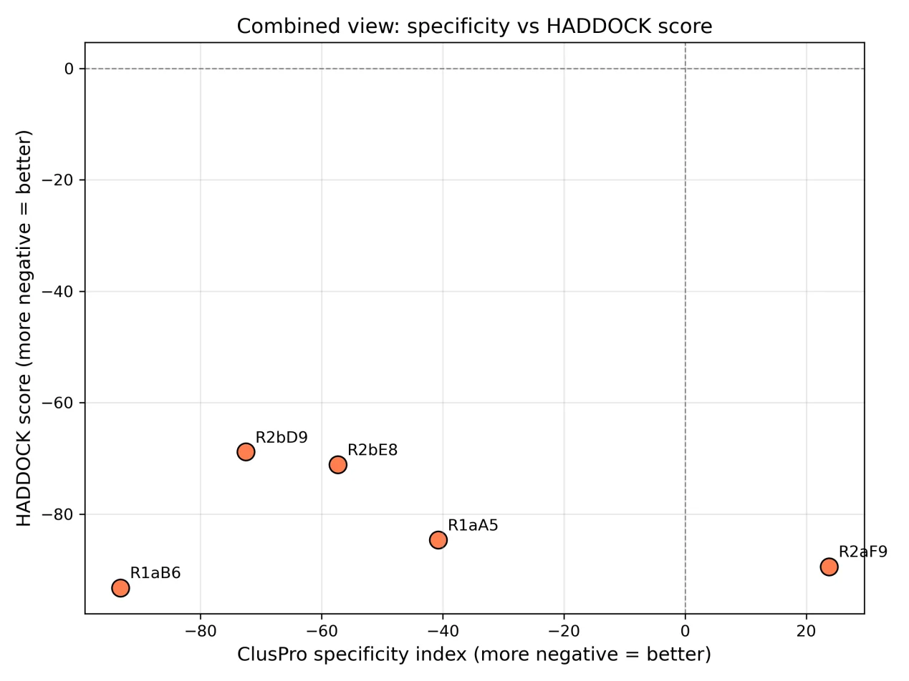
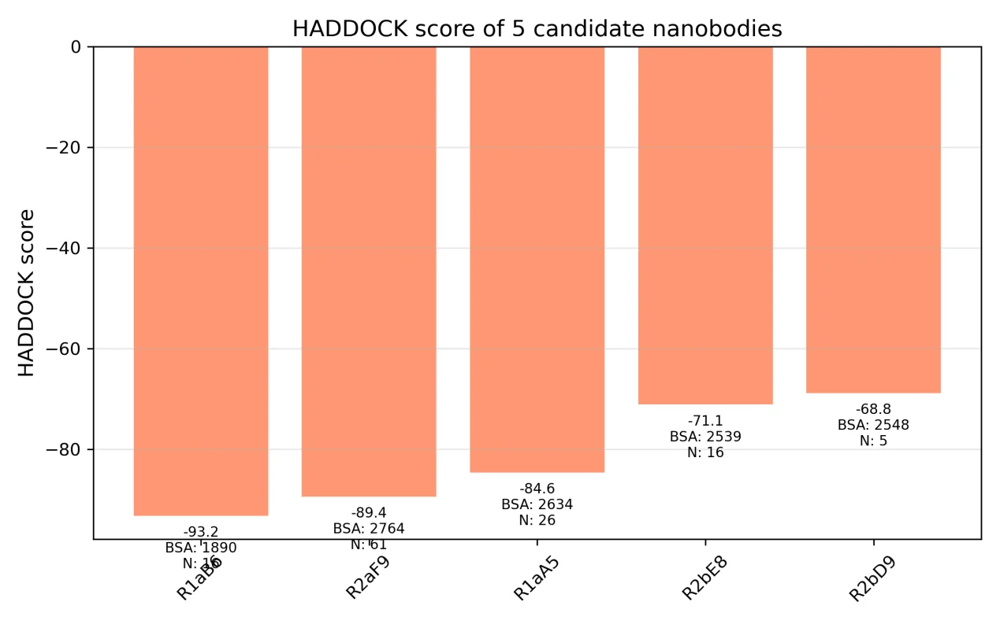
1.6 PyMOL + SPICE Interface Analysis
Interface analysis targets the best combination, R1aB6 with H1N1 HA. PyMOL gives 30 interface residues on the HA side (27–32, 44–53, 303–332, 358–396) and 24 residues on the nanobody side (CDR1 27–37, CDR2 44–65, CDR3 101–104). SPICE[9] gives the following counts of interaction types for the two best clusters of the refinement:
| Interaction Type | Cluster 1 | Cluster 5 |
|---|---|---|
| Total contacts | 61 | 44 |
| Hydrogen bonds | 19 | 24 |
| Salt bridges | 3 | 7 |
| Hydrophobic interactions | 39 | 13 |
The residues with the shortest distances and repeated occurrences are promoted to hotspots:
| Nanobody Residue | HA Residue | Interaction | Distance (Å) |
|---|---|---|---|
| ARG-B:31 | GLU-A:51 | Hydrogen bond + salt bridge | 2.866 / 3.169 |
| ARG-B:31 | SER-A:53 | Hydrogen bond | 3.438 |
| ARG-B:31 | SER-A:304 | Hydrogen bond | 2.986 |
| ARG-B:33 | ASN-A:27 | Hydrogen bond | 3.286 |
| TYR-B:54 | ASP-A:31 | Hydrogen bond | 2.993 |
ARG-B:31 recurs in three of the five shortest-distance contacts (GLU-A:51, SER-A:53, SER-A:304) and is the hotspot residue carried into the R31A mutant proposal; TYR-B:54 completes the polar pair with ASP-A:31.
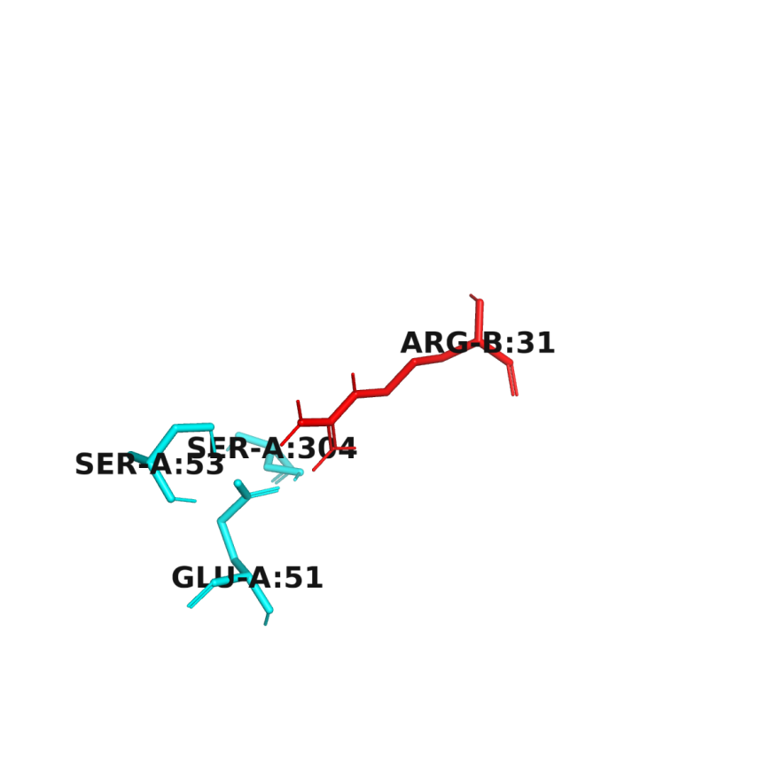
Interaction Reports: R1aB6 × H1N1 HA Cluster 5
Four analyses of the same complex, each opening as a standalone report page.
- Contact Analysis 3D view plus every residue contact, grouped by bond type.
- Interface Analysis Interface residue grid with per-residue contact detail.
-
SASA Analysis
Burial-depth and per-residue surface-area plots.
The file supplied for this slot in the source folder is byte-identical to the Contact Analysis report (sha256 b9487783ee3055c1), so no separate SASA report exists for this complex.
- Tabular Data The same numbers as sortable tables, one tab per chain, with CSV export.
Each report opens in its own tab and is not part of the wiki navigation. Report colour scheme and decorative icons were adjusted for this site; the analyses, tables and 3D models are the original outputs. Figures are computational predictions that have not been validated by wet-lab experiments.
1.7 GROMACS 100 ns MD
The R1aB6–H1N1 HA complex was placed in a water box for molecular dynamics to observe whether it is stable:
| Parameter | Value |
|---|---|
| Force field | Amber99SB-ILDN |
| Water model | TIP3P |
| Temperature | 300 K |
| Pressure | 1 bar |
| Total duration | 100 ns |
| Performance | 64.810 ns/day |
| Metric | Value |
|---|---|
| RMSD, full-segment average | 0.4974 nm |
| RMSD, 90-100 ns | 0.4574 nm |
| Rg (90-100 ns) | 3.7154 nm |
| Hydrogen bonds, full-segment | 463.04 ± 10.08 |
| ARG-B:31 RMSF | 0.1744 nm |
The radius of gyration (Rg) stabilized at 3.72 nm (90-100 ns mean), indicating a compact and stable complex without significant expansion or collapse during the 100 ns simulation.
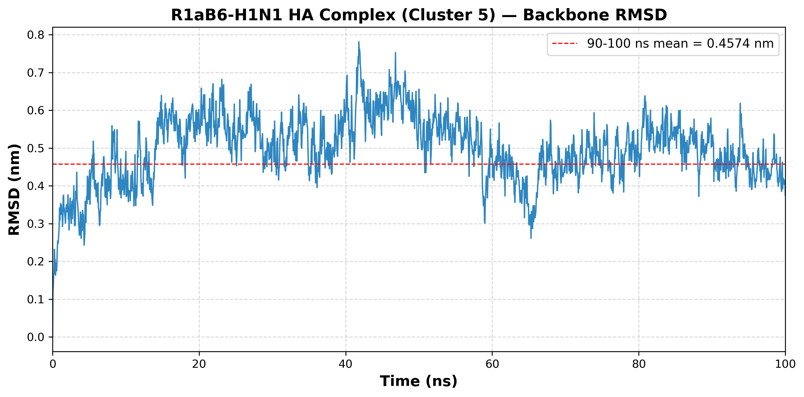
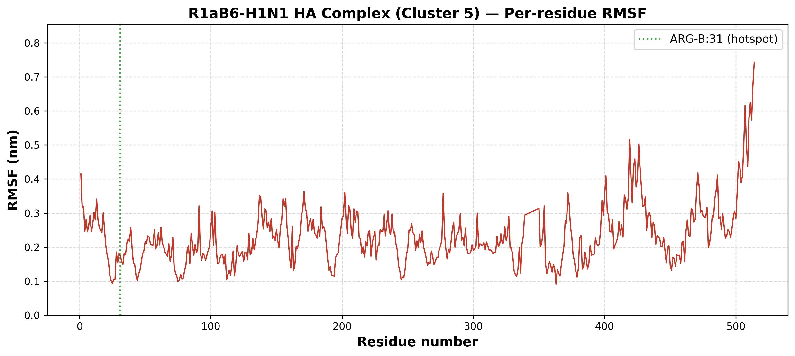
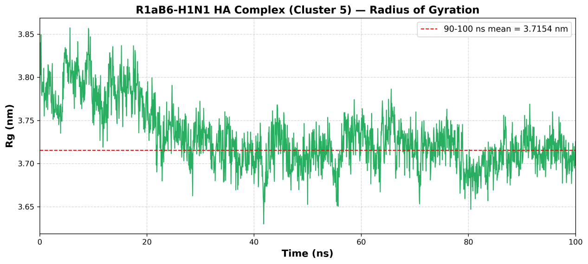
Molecular Dynamics Engine: The Leapfrog Integrator in GROMACS. To simulate the atomic trajectories of our complexes over 100 ns, GROMACS numerically integrates Newton’s equations of motion. We utilized the Leapfrog integrator, a standard and highly efficient algorithm that updates velocities and positions in an interleaved, half-step manner:
Δt is the integration time step (typically 2 fs).
Interleaved Update: velocities are updated for half-steps, while positions are advanced by full steps, allowing the algorithm to “leapfrog” over the current state.
Efficiency & Stability: this method requires storing only one set of positions and velocities at a time, drastically reducing memory usage. Crucially, as a time-reversible and symplectic integrator, it prevents numerical energy drift during long simulations. This provides the rigorous mathematical foundation for the stable RMSD and RMSF trajectories we observed in our 100 ns MD.
1.8 gmx_MMPBSA Binding Free Energy
MM-GBSA calculations[6] were performed using the single-trajectory protocol implemented in gmx_MMPBSA 1.5.0.3, with the Amber99SB-ILDN force field for the binding free energy estimation, for both clusters of the refined complex:
| Energy term | Cluster 1 (kcal/mol) | Cluster 5 (kcal/mol) |
|---|---|---|
| ΔVDWAALS | −54.65 | −89.36 |
| ΔEEL | −100.53 | −238.46 |
| ΔEGB | 147.79 | 325.37 |
| ΔESURF | −7.28 | −11.94 |
| ΔTOTAL | −14.67 | −14.39 |
Total binding free energy: ΔTOTAL = -14.67 ± 1.31 kcal/mol for Cluster 1 and -14.39 kcal/mol for Cluster 5.
Per-residue decomposition (ligand side, top 5):
| Rank | Residue | Contribution (kcal/mol) |
|---|---|---|
| 1 | ARG-B:31 (hotspot) | −5.460 |
| 2 | PRO-B:101 | −2.949 |
| 3 | TYR-B:54 | −2.158 |
| 4 | GLY-B:102 | −1.091 |
| 5 | TYR-B:32 | −0.779 |
Model5 §1.8, single-trajectory protocol of gmx_MMPBSA 1.5.0.3 with the Amber99SB-ILDN force field. ΔTOTAL for Cluster 1 carries a reported SEM of ± 1.31 kcal/mol.
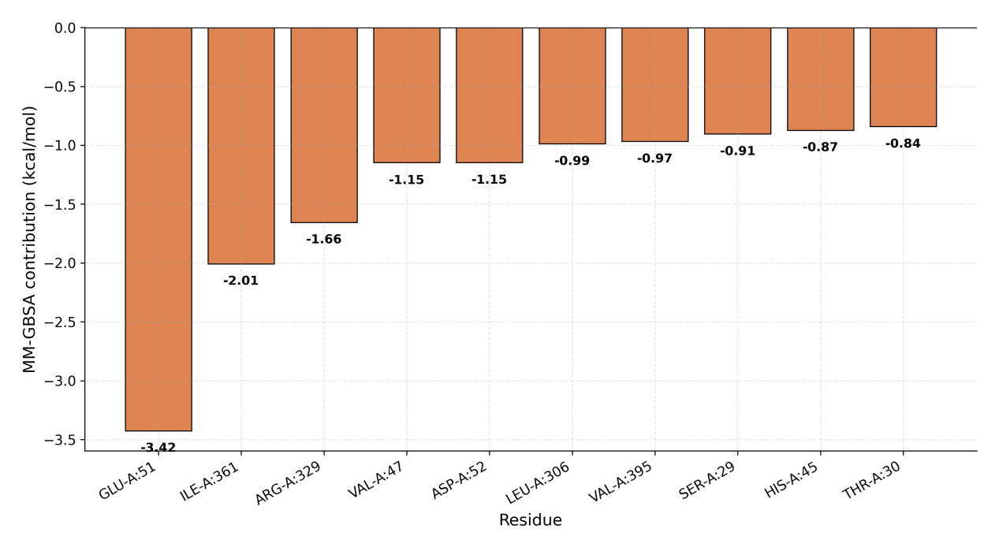
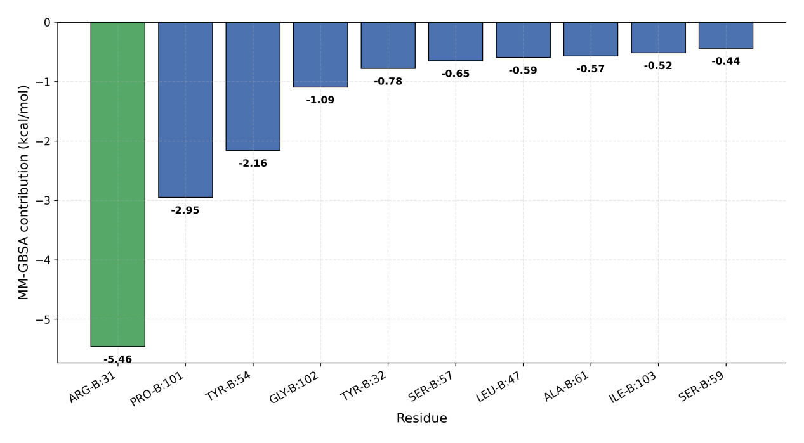
1.9 Positive Control: 9VH4 Re-docking
The experimentally resolved 9VH4 complex (H1N1 HA with its co-crystallised antibody) was re-docked through the same HADDOCK pipeline as a positive control for the docking protocol:
| Metric | Result |
|---|---|
| HADDOCK score | −111.5 ± 0.9 |
| Cluster size | 199 (99% convergence) |
| BSA | 1827.5 Ų |
| Receptor superposition RMSD | 0.349 Å |
| Antibody chain CA i-RMSD | 2.113 Å |
The near-complete cluster convergence (199 structures, 99%) and the low interface i-RMSD (2.113 Å) indicate that the pipeline reproduces a known binding mode. This validates the docking protocol; it does not validate any candidate, and it is not an experimental measurement of the project's own complex.
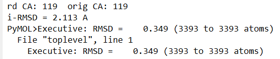
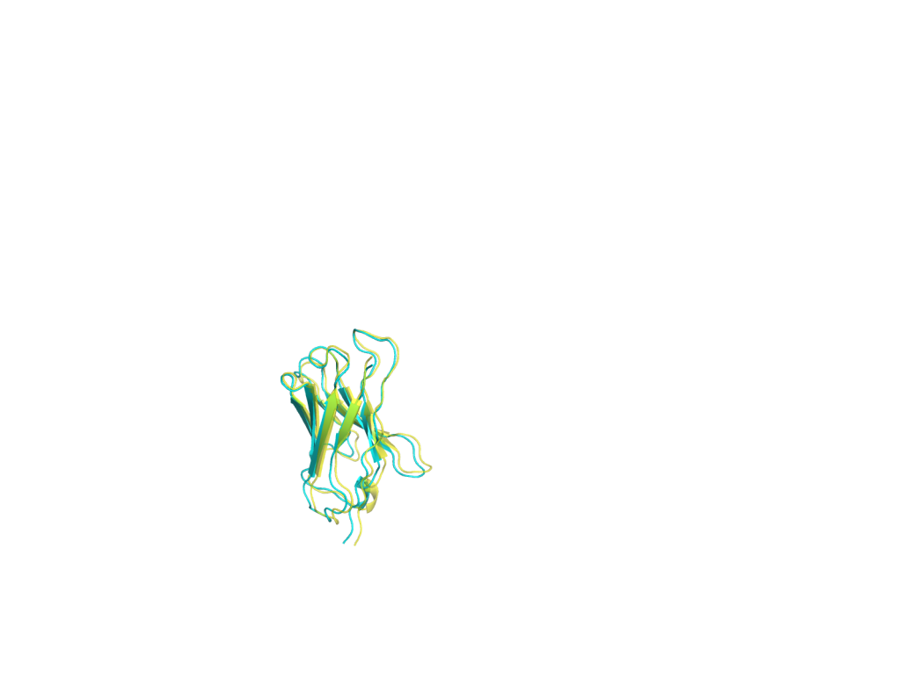
1.10 Card Game
The card game covers HADDOCK 2.5 semi-flexible refinement only: the H1N1 HA antigen against 5 nanobodies. Every card is a real docking result. Drag a nanobody card or the antigen card into the centre and its 3D structure is drawn on its own; add the second card and the pair is drawn as the docked complex, together with the HADDOCK score, RMSD, structure count and energy terms of the selected cluster. Each nanobody card shows the best cluster of its run (5 clusters over 5 nanobodies, 5 representative structures), and the cluster selector switches to any other cluster of the same run.
The modelling document uses the lead pair R1aB6 × H1N1 HA as the worked example of this card game:
| Metric | Value |
|---|---|
| Specificity index | −93.25 |
| H1N1 docking score | −933.9 |
| H3N2 docking score | −863.4 |
| H5N1 docking score | −817.9 |
| Rank | 1 / 17 |
Nanobodies 5 candidates
3D Structure & Ranking
Pick a card to draw its structure. The 3D library is downloaded only at that step.
HA Antigens Influenza A · 1
Scores displayed represent the mean values for the selected cluster of each nanobody × H1N1 HA complex, along with the standard deviation, RMSD, structure count, and intermolecular energy. Note that HADDOCK orders clusters by population (structure count) rather than by score. Therefore, the interface defaults to the most populated cluster (e.g., Cluster 1), but the final candidate selection prioritizes the best-scoring cluster (e.g., R1aB6 Cluster 5, score −93.2). Card artwork comes from the project's own icon set. All values are computational predictions that have not been validated by wet-lab experiments.
Path A: hM1Dq Gating System
A.1 hM1Dq Structure Preparation and Validation
The starting receptor is the wild-type structure in RCSB (5CXV, 2.7 Å, residues 1–460). Two point mutations were introduced by hand, the predicted structure was produced with ColabFold, and the membrane orientation was set with PPM 3.0:
| Structure | Source | pLDDT / Resolution | Number of residues |
|---|---|---|---|
| Wild type | RCSB 5CXV | 2.7 Å | 1–460 |
| Manual mutant | 5CXV editing | — | 1–460 |
| AF2 prediction | ColabFold | 70.5 | 460 |
| PPM alignment | AF2 + PPM 3.0 | ΔG −71.8 | 460 |
Superposition validation:
| Comparison | RMSD |
|---|---|
| AF2 prediction vs. 5CXV | 1.568 Å (1913 atoms) |
| PPM alignment vs. 5CXV OPM | 0.884 Å (141 atoms) |
| Position 106 validation (Y106C) | 6 atoms → CYS |
| Position 196 validation (A196G) | 4 atoms → GLY |
| PPM transmembrane segments | 1(2248), 2(6387), 3(96121), 4(143164), 5(185209), 6(367390), 7(397418) |
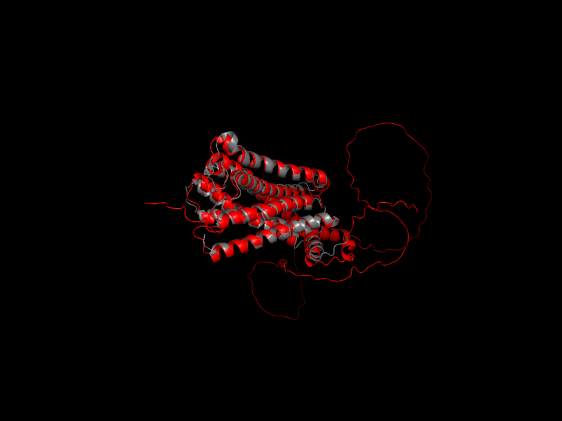
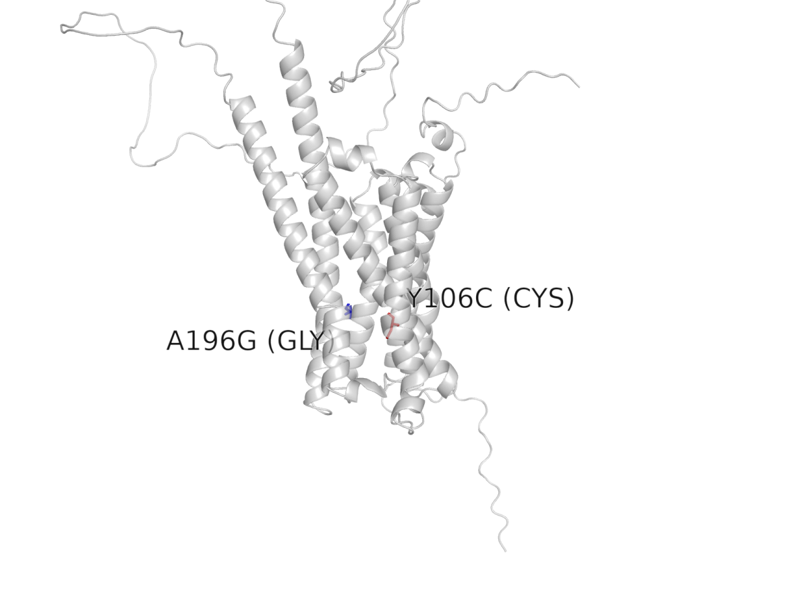
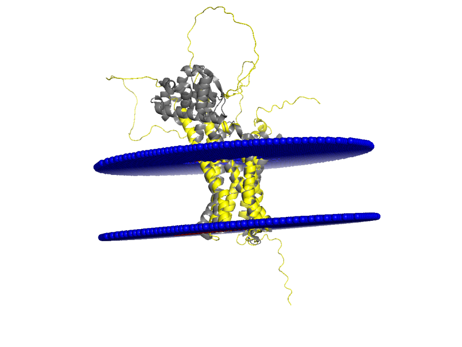
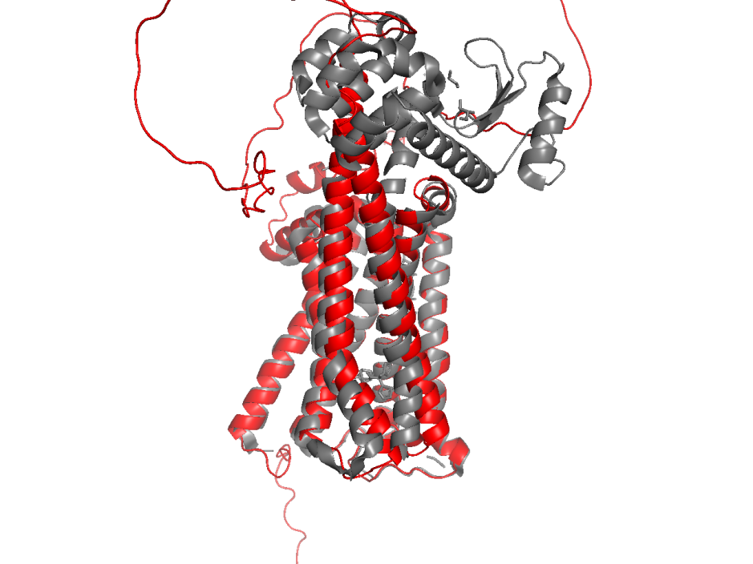
A.2 MT1 Inhibitory Peptide Structure
MT1 is a 62-residue inhibitory toxin.
Sequence (62 aa): LTCVTSKSIFGITTENCPDGQNLCFKKWYYIVPRYSDITWGCAATCPKPTNVRETIRCCET
Disulfide bonds: CYS 3–24 (2.09 Å), CYS 17–42 (2.11 Å), CYS 46–58 (2.09 Å).
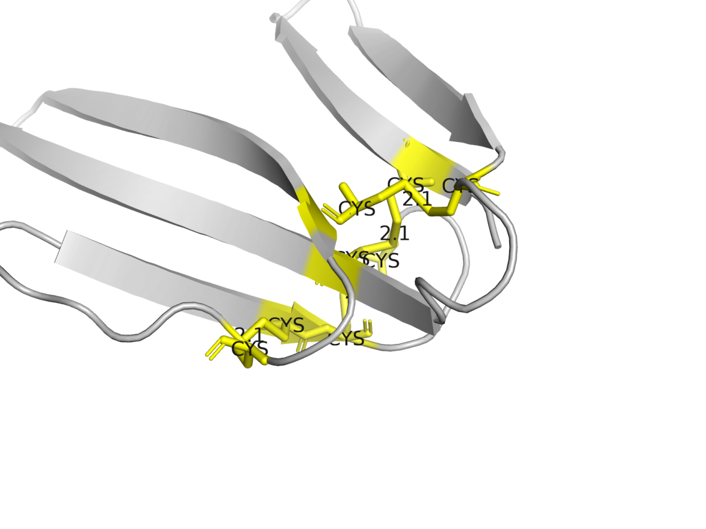
A.3 Gpa1 (Gα) Humanization Engineering
Source: RCSB 9SH6 (2.77 Å)
Wild-type C-terminus: KIGII
Engineered C-terminus: EYNLV + stop codon TGA
Chain mapping: chain D = Gα, chain C = Gβ, chain G = Gγ
Computational Validation Status:
While the humanized Gpa1 (Gα) was successfully engineered and docked to the hM1Dq receptor using HADDOCK 2.5 (yielding a favorable score of −149.4 for the single-chain complex), a full 100 ns membrane Molecular Dynamics (MD) simulation of the complete hM1Dq-Gpa1 complex was not performed in this iteration.
Reason: The complete heterotrimeric G-protein membrane system is exceptionally large (~850,000 atoms). Running a 100 ns MD under our current computational resources would require 2–3 weeks. Therefore, we validated the interaction interface via HADDOCK and SPICE analysis, and have listed the full membrane MD as a key Future Work item.
A.4 OPM/PPM Membrane Alignment
| Parameter | Value |
|---|---|
| Hydrophobic layer thickness | 31.8 Å |
| Tilt angle | 2° |
| ΔGtransfer | −71.8 kcal/mol |
| PPM transmembrane segments | 1(2248), 2(6387), 3(96121), 4(143164), 5(185209), 6(367390), 7(397418) |
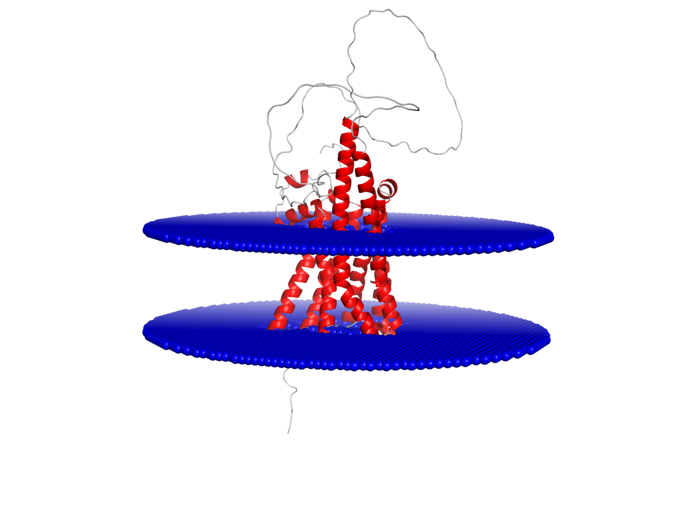
A.5 HADDOCK Docking of hM1Dq × MT1
Best cluster = Cluster 1:
| Metric | Value |
|---|---|
| HADDOCK score | −83.3 |
| Cluster size | 76 |
| RMSD | 0.5 Å |
| BSA | 1531.9 Å2 |
| Z-score | −1.4 |
| Elec | −309.1 |
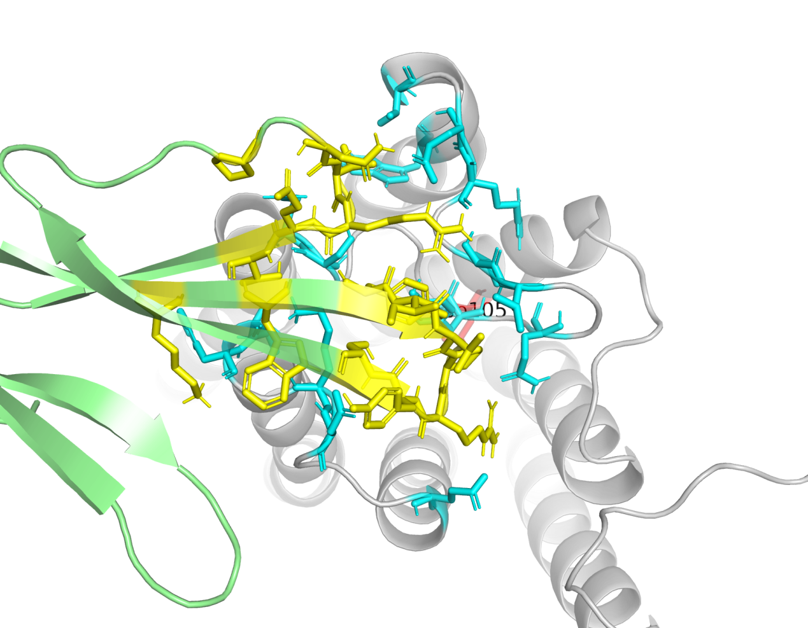
A.6 HADDOCK Docking of hM1Dq × Gpa1 (Gα) Humanization
| Docking system | Best cluster | Score | Size | RMSD (Å) | BSA (Å2) |
|---|---|---|---|---|---|
| hM1Dq × Gpa1 total | Cluster 6 | −131.7 | 12 | 1.5 | 3715.9 |
| hM1Dq × Gpα single chain | Cluster 1 | −149.4 | 29 | 0.8 | 4007.7 |
Key conclusion: The single-chain Cluster 1 of hM1Dq × Gpα (−149.4) was superior to total Cluster 6 (−131.7), supporting that the GPCR–G protein coupling interface is primarily mediated by Gα.
A.7 Comprehensive SPICE Interaction Profiling
To thoroughly understand the interaction mechanisms, we utilized the SPICE web server to comprehensively profile the binding interface. This analysis encompasses Contact Analysis (bond types and pairs), Interface Analysis (residue-level details), SASA Analysis (buried surface area), and downloadable Tabular Data.
We used SPICE to perform interface analysis on the hM1Dq × MT1 (Cluster 1) complex, with the distance threshold set to 5.0 Å. The analysis results revealed the key residues and interactions driving binding.
The binding interface is dominated by two strong salt bridges (GLU170–ARG53 and GLU397–ARG34), supplemented by a hydrophobic cluster involving LEU174, PHE390, TRP164 on hM1Dq and VAL52, TRP28, ILE31 on MT1:
| hM1Dq Residue | MT1 Residue | Interaction | Distance (Å) |
|---|---|---|---|
| GLU A:170 | ARG B:53 | Hydrogen bond + salt bridge | 2.698 / 3.595 / 3.799 |
| GLU A:397 | ARG B:34 | Hydrogen bond + salt bridge | 2.754 / 2.637 |
| GLU A:170 | ASN B:51 | Hydrogen bond | 3.312, 2.665 |
| GLN A:177 | ARG B:34 | Hydrogen bond | 2.703 |
| SER A:184 | THR B:55 | Hydrogen bond | 2.671 |
| GLN A:185 | GLU B:54 | Hydrogen bond | 3.076 |
| ASP A:393 | TRP B:28 | Hydrogen bond | 2.677 |
| LEU A:174 | VAL B:32 / PRO B:33 / ILE B:31 | Hydrophobic | 3.435–4.423 |
| PHE A:390 | TRP B:28 | Hydrophobic | 4.088, 4.259 |
| TRP A:164 | VAL B:52 | Hydrophobic | 4.471 |
Interface residue statistics (SPICE definition, distance threshold 5.0 Å):
hM1Dq-side interface residues: 20 (GLY A:89, TRP A:164, VAL A:168, GLU A:170, ARG A:171, THR A:172, VAL A:173, LEU A:174, GLN A:177, TYR A:179, SER A:184, GLN A:185, PRO A:186, THR A:389, PHE A:390, CYS A:391, LYS A:392, ASP A:393, CYS A:394, GLU A:397)
MT1-side interface residues: 18 (LYS B:26, TRP B:28, TYR B:30, ILE B:31, VAL B:32, PRO B:33, ARG B:34, TYR B:35, SER B:36, ILE B:38, PRO B:49, ASN B:51, VAL B:52, ARG B:53, GLU B:54, THR B:55, ILE B:56, ARG B:57)
Key finding: The extracellular orthosteric site of hM1Dq is competitively occupied by MT1, whereas the intracellular ICL2/ICL3/H8 is bound by the C-terminus of the α5 helix of Gpa1. The two do not overlap spatially and can theoretically bind simultaneously.
Note: SPICE contact residues (5.0 Å) yielded 38 residues, whereas the MM-GBSA per-residue decomposition (6.0 Å) captured 50 interface residues.
Interaction Reports: hM1Dq × MT1 Cluster 1
Four analyses of the Path A gating complex. MT1 occupies the extracellular orthosteric site of hM1Dq, which is where the inhibitory toxin acts before antigen arrival.
- Contact Analysis 3D view plus every residue contact, grouped by bond type.
- Interface Analysis Interface residue grid with per-residue contact detail.
- SASA Analysis Burial-depth and per-residue surface-area plots.
- Tabular Data The same numbers as a sortable table, with CSV export.
Each report opens in its own tab and is not part of the wiki navigation. Report colour scheme and decorative icons were adjusted for this site; the analyses, tables and 3D models are the original outputs. Figures are computational predictions that have not been validated by wet-lab experiments.
A.8–A.10 Membrane MD & MM-GBSA (hM1Dq + MT1)
The complex was embedded with CHARMM-GUI[10] using a rectangular box of 150 Å with a 22.5 Å water layer, KCl at 0.15 M, 310 K, and the CHARMM36m[13] force field with TIP3P[15] water, giving 631,498 atoms. Membrane lipid ratio basis: approximate plasma membrane composition of BY4741 Saccharomyces cerevisiae. The membrane lipid composition was set to approximate the S. cerevisiae BY4741 plasma membrane, based on lipidomics data from Ejsing et al. (2009)[19] and Zinser et al. (1991)[20]: Ergosterol 30%, POPI 28%, POPC 17%, POPE 14%, POPA 6%, POPS 5%[14].
| Parameter | hM1Dq + MT1 | hM1Dq + Gpα single chain |
|---|---|---|
| Box type | Rectangular | Rectangular |
| X/Y | 150 Å | 188.52 Å |
| Water layer thickness | 22.5 Å | 17.5 Å |
| Membrane lipid composition | Ergosterol 30% / POPI 28% / POPC 17% / POPE 14% / POPA 6% / POPS 5% | Same as left |
| Ions | KCl 0.15 M | KCl 0.15 M |
| Temperature | 310 K | 310 K |
| Force field | CHARMM36m + TIP3P | CHARMM36m + TIP3P |
| System atom count | 631,498 | approximately 850,000 |
Note on system size and simulation status:
Both atom counts (631,498 and ~850,000) represent the fully solvated systems, which include the protein/peptide, lipids, ions (KCl), and explicit TIP3P water molecules. The pure protein atom count is only a few thousand.
Why is the single-chain system larger (~850,000)? Although the hM1Dq+Gpα complex has fewer protein residues than the hM1Dq+MT1 complex, its required X/Y box dimension was significantly larger (188.52 Å vs. 150 Å). This larger area accommodated substantially more water molecules, resulting in a higher total atom count.
Simulation status: The 100 ns MD simulation was successfully completed for the hM1Dq + MT1 system (631,498 atoms). The larger hM1Dq + Gpα system (~850,000 atoms) was not simulated in this iteration due to computational resource limits and is listed as Future Work.
A.9 GROMACS MD
100 ns production MD has been completed for hM1Dq + MT1.
MM-GBSA gave:
| Energy term | Value (kcal/mol) |
|---|---|
| ΔVdW | −57.36 |
| ΔEEL | +32.76 |
| ΔEGB | −7.41 |
| ΔESURF | −8.36 |
| ΔGGAS | −24.60 |
| ΔGSOLV | −15.77 |
| ΔTOTAL | −40.37 ± 1.27 |
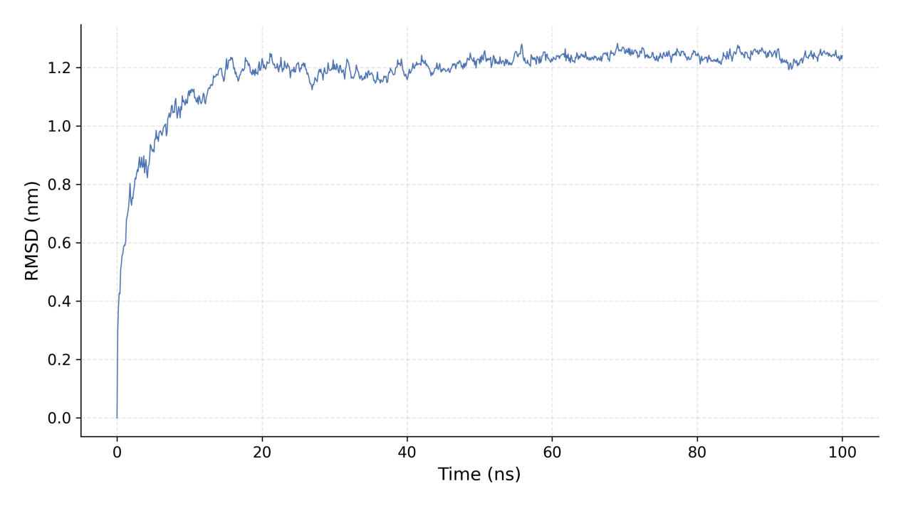
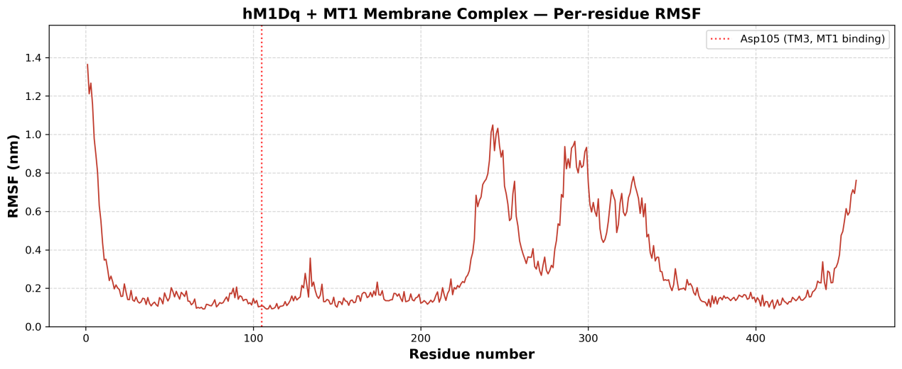
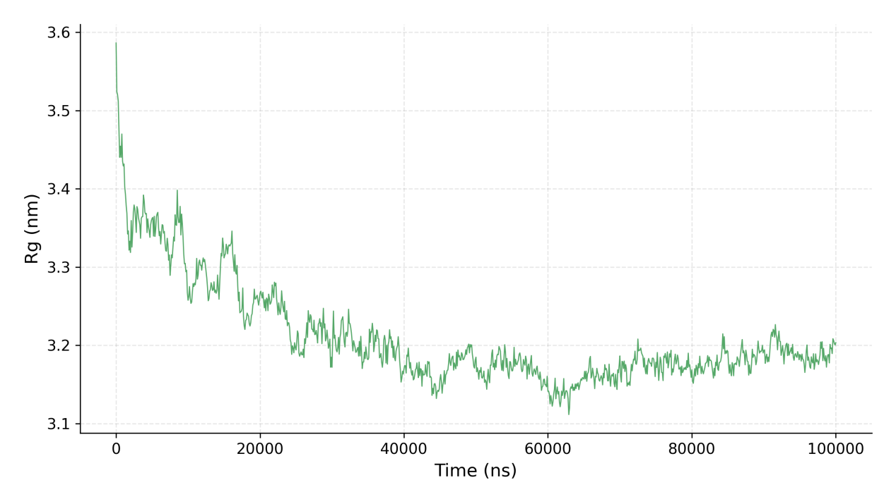
A.10 MM-GBSA + Per-residue
Interface residues: MM-GBSA per-residue decomposition identified 50 interface residues (30 on the hM1Dq side and 20 on the MT1 side). TRP:28–TYR:35 of MT1 are the main binding anchors. The full Gα single-chain system is about 850,000 atoms and was listed as future work.
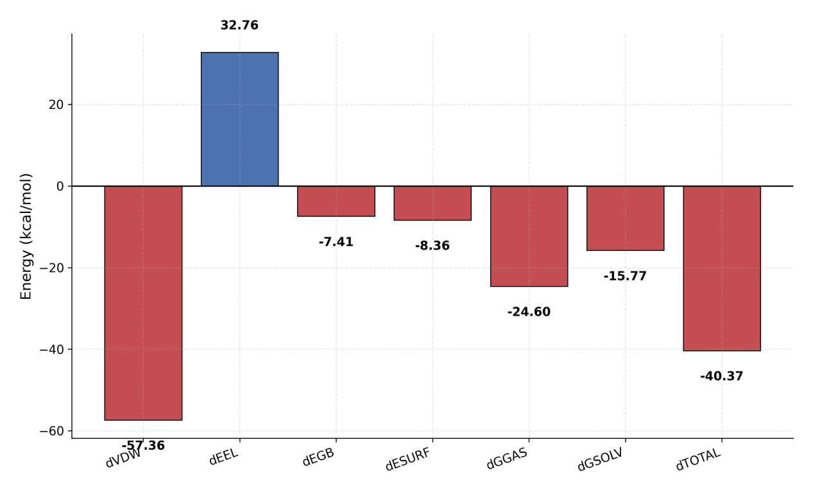
Path B: Ste2 Gating System
B.1 Ste2 Structure Preparation and OPM Processing
| Structure | Source | Resolution | Qscore | Purpose |
|---|---|---|---|---|
| Ligand-free | RCSB 7QB9 | 3.10 Å | 0.501 | Main structure |
| Agonist-bound | RCSB 7QBC | 3.53 Å | 0.422 | Alternative |
| Predicted | AlphaFold DB P0CI39 | pLDDT 66.5 | — | Insufficient quality, discarded |
OPM membrane orientation of the ligand-free structure:
| Parameter | Value |
|---|---|
| Hydrophobic layer thickness | 32.2 Å |
| Tilt angle | 0° |
| ΔGtransfer | −103.4 kcal/mol |
| Transmembrane segments | 50–71, 79–102, 129–151, 162–186, 206–224, 255–269, 273–293 |
Processing steps: Download 7qb9.cif → remove non-polymer and non-A chains in PyMOL → save Ste2_OPM_chainA.pdb (2295 atoms).
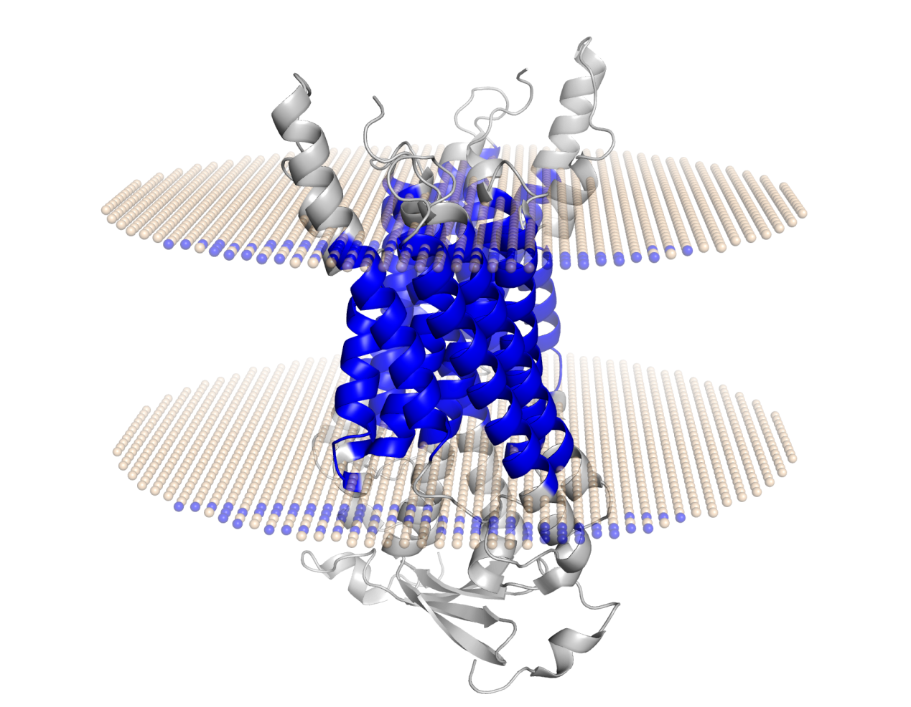
B.2 Auto-inhibitory Peptides Design and AF2 Prediction
Method: ColabFold, msamode single_sequence, numrecycle 1, nummodels 1. All completed in approximately 15 seconds:
| ID | Sequence | pLDDT | pTM |
|---|---|---|---|
| pep1 | CRGPQLKPGQPMY | 75.3 | 0.033 |
| pep2 | HLQLKPGQPMY | 74.4 | 0.040 |
| pep3 | AHALQLKPGQPMY | 73.9 | 0.035 |
| pep4 | WHELQLKPGQPMY | 68.6 | 0.033 |
| pep5 | FHLLQLKPGQPMY | 72.2 | 0.032 |
| pep6 | AHALRLKPGQPMY | 70.5 | 0.033 |
| pep7 | WDLDQLKPGQPMY | 67.3 | 0.032 |
| pep8 | WHWLGLGAGQPMY | 72.0 | 0.033 |
B.3 Ste2 × pep5 (Auto-inhibitory peptide) HADDOCK Docking
Comparison of the best clusters for the 8 peptides:
| Peptide | Best cluster | Score | Size | RMSD (Å) |
|---|---|---|---|---|
| pep5 | C1 | −99.2 | 33 | 0.6 |
| pep8 | C1 | −98.6 | 125 | 5.3 |
| pep1 | C1 | −96.5 | 68 | 0.8 |
| pep3 | C1 | −96.2 | 57 | 0.9 |
| pep2 | C6 | −93.2 | 7 | 0.7 |
| pep4 | C9 | −92.7 | 6 | 1.0 |
| pep6 | C5 | −91.7 | 13 | 0.9 |
| pep7 | C7 | −89.9 | 8 | 0.8 |
Screening conclusion: pep5 is the best overall (HADDOCK score −99.2, RMSD 0.6 Å, Zscore −2.1, VdW contacts −72.0).
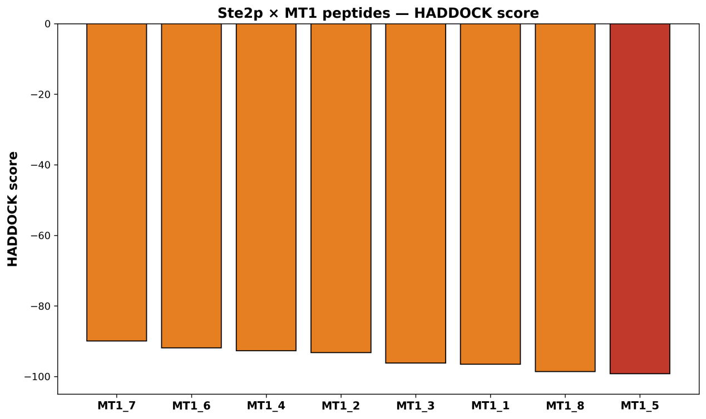
B.4 Comprehensive SPICE Interaction Profiling
To thoroughly understand the interaction mechanisms, we utilized the SPICE web server to comprehensively profile the binding interface. This analysis encompasses Contact Analysis (bond types and pairs), Interface Analysis (residue-level details), SASA Analysis (buried surface area), and downloadable Tabular Data.
We used SPICE to perform interface analysis on the Ste2 × pep5 (Cluster 1) complex, with a distance threshold of 5.0 Å. The results revealed numerous polar interactions and hydrophobic contacts.
| Ste2 Residue | pep5 Residue | Interaction | Distance (Å) |
|---|---|---|---|
| TYR A:106 | HIS B:2 | Hydrogen bond | 3.093 |
| TYR A:111 | HIS B:2 | Hydrogen bond | 2.795 |
| THR A:192 | HIS B:2 | Hydrogen bond | 2.979 |
| VAL A:196 | HIS B:2 | Hydrogen bond | 3.318 |
| SER A:197 | PHE B:1 | Hydrogen bond | 3.290, 3.312 |
| ALA A:198 | HIS B:2 | Hydrogen bond | 3.480, 3.421 |
| ALA A:198 | LEU B:3 | Hydrogen bond | 3.263 |
| LYS A:202 | GLN B:5 | Hydrogen bond | 2.638 |
| ASN A:205 | PRO B:8 | Hydrogen bond | 3.201 |
| TYR A:266 | GLN B:10 | Hydrogen bond | 2.999, 3.122 |
| SER A:267 | GLN B:10 | Hydrogen bond | 3.220 |
| SER A:267 | MET B:12 | Hydrogen bond | 3.106 |
| LEU A:268 | GLN B:10 | Hydrogen bond | 3.317, 2.959 |
| ASP A:275 | LYS B:7 | Hydrogen bond | 2.910, 2.990 |
| ASP A:275 | LYS B:7 | Salt bridge | 2.990 |
| TYR A:111 | PHE B:1 | Hydrophobic | 3.393–4.482 (15 pairs) |
| ALA A:112 | PHE B:1 | Hydrophobic | 3.614–4.450 (6 pairs) |
| TYR A:128 | LEU B:4 | Hydrophobic | 4.243 |
| PHE A:204 | PRO B:8 | Hydrophobic | 3.971–4.268 (3 pairs) |
| PRO A:270 | LEU B:6, PRO B:8 | Hydrophobic | 3.562–4.468 (4 pairs) |
| TYR A:106 | HIS B:2 | π-stacking | 5.505 |
| TYR A:128 | HIS B:2 | π-stacking | 6.372 |
Interface residue statistics (SPICE definition, distance threshold 5.0 Å):
Ste2-side interface residues: 27 (TYR A:101, TYR A:106, TYR A:111, ALA A:112, GLY A:115, TYR A:128, THR A:192, ASP A:195, VAL A:196, SER A:197, ALA A:198, THR A:199, GLN A:200, LYS A:202, PHE A:204, ASN A:205, THR A:208, ILE A:209, TYR A:266, SER A:267, LEU A:268, LYS A:269, PRO A:270, GLY A:273, THR A:274, ASP A:275, THR A:278)
pep5-side interface residues: all 12 (PHE B:1, HIS B:2, LEU B:3, LEU B:4, GLN B:5, LEU B:6, LYS B:7, PRO B:8, GLY B:9, GLN B:10, PRO B:11, MET B:12)
Conclusion: Ste2 primarily binds to pep5 through ECL2 (TYR A:106, TYR A:111, ALA A:112, GLY A:115, TYR A:128), ECL3 (THR A:192, ASP A:195, VAL A:196, SER A:197, ALA A:198, THR A:199, GLN A:200, LYS A:202, PHE A:204, ASN A:205, THR A:208, ILE A:209) and TM7 (TYR A:266, SER A:267, LEU A:268, LYS A:269, PRO A:270, GLY A:273, THR A:274, ASP A:275, THR A:278). The N-terminus (PHE1HIS2) and middle region (LYS7PRO8) of pep5 are the primary anchors.
Note: SPICE contact residues (5.0 Å) yielded 39 residues for Path B, whereas the MM-GBSA per-residue decomposition (6.0 Å) captured 63 interface residues.
Interaction Reports: Ste2 × pep5 Cluster 1
Four analyses of the Path B gating complex. The auto-inhibitory peptide pep5 binds mainly through ECL2, ECL3 and TM7 of Ste2.
- Contact Analysis 3D view plus every residue contact, grouped by bond type.
- Interface Analysis Interface residue grid with per-residue contact detail.
- SASA Analysis Burial-depth and per-residue surface-area plots.
- Tabular Data The same numbers as a sortable table, with CSV export.
Each report opens in its own tab and is not part of the wiki navigation. Report colour scheme and decorative icons were adjusted for this site; the analyses, tables and 3D models are the original outputs. Figures are computational predictions that have not been validated by wet-lab experiments.
B.5–B.7 CHARMM-GUI Membrane System, GROMACS MD & MM-GBSA
The complex was embedded with CHARMM-GUI under the same conditions as Path A, at the yeast growth temperature:
| Parameter | Value |
|---|---|
| Box type | Rectangular |
| X/Y | 150 Å |
| Water layer thickness | 22.5 Å |
| Membrane lipids | Ergosterol 30% / POPI 28% / POPC 17% / POPE 14% / POPA 6% / POPS 5% |
| Ions | KCl 0.15 M |
| Temperature | 303.15 K (yeast 30°C) |
| Force field | CHARMM36m + TIP3P |
| System atom count | 276,189 |
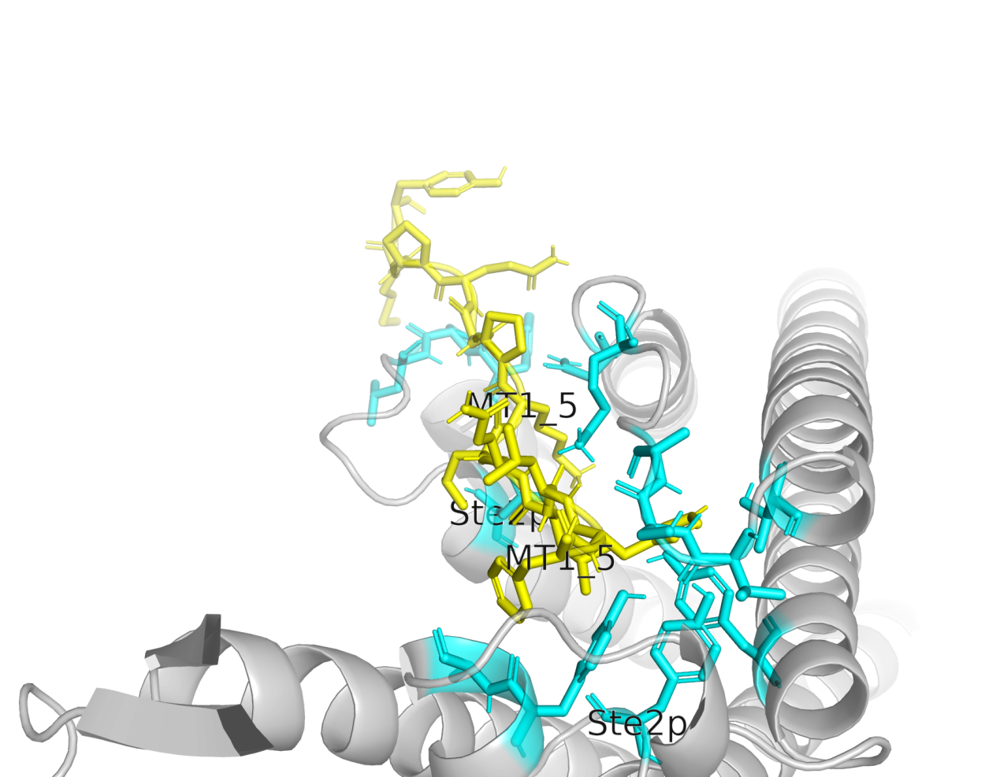
B.6 GROMACS MD
100 ns production MD has been completed, with a performance of 68 ns/day. The backbone RMSD stabilized at 0.4651 nm (90–100 ns mean).
| Energy term | Value (kcal/mol) |
|---|---|
| ΔVdW | −52.93 |
| ΔEEL | −123.14 |
| ΔEGB | +152.61 |
| ΔESURF | −7.97 |
| ΔGGAS | −176.07 |
| ΔGSOLV | +144.63 |
| ΔTOTAL | −31.43 ± 3.46 |
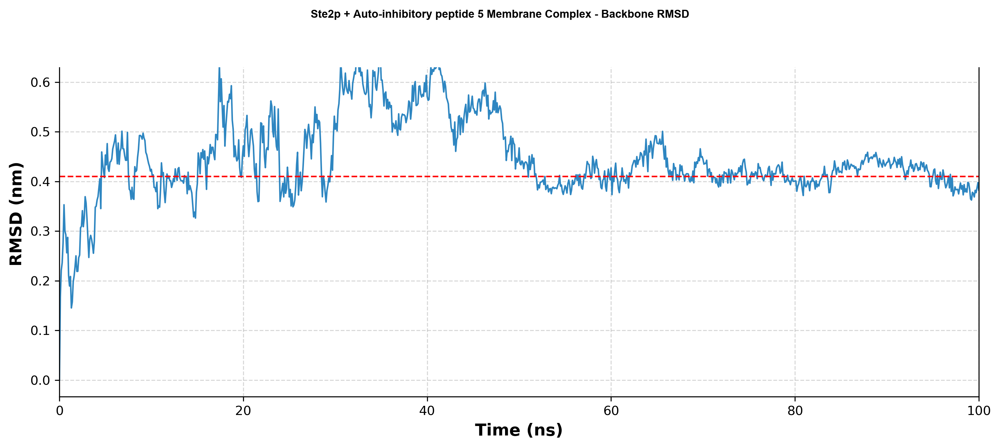
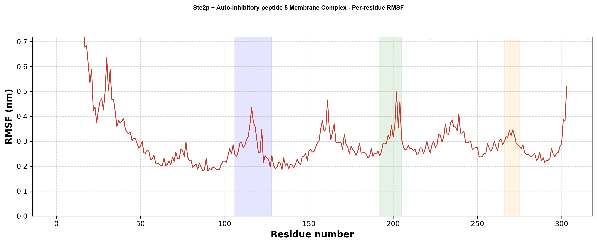
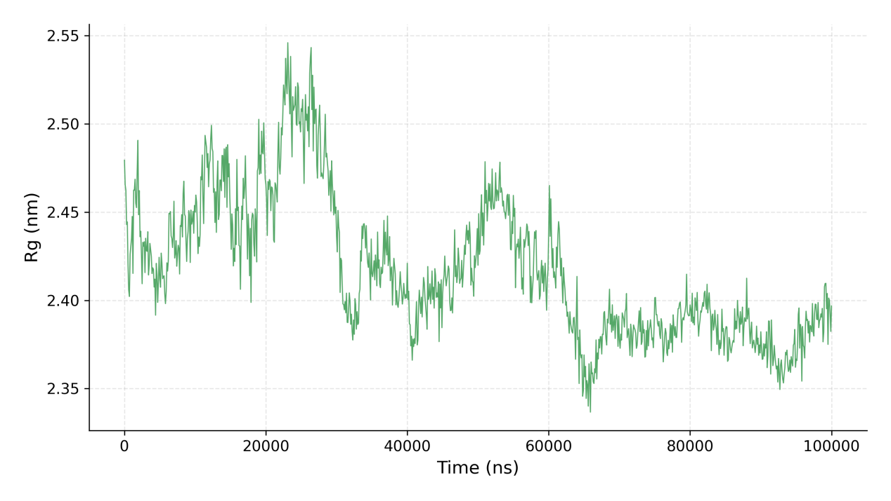
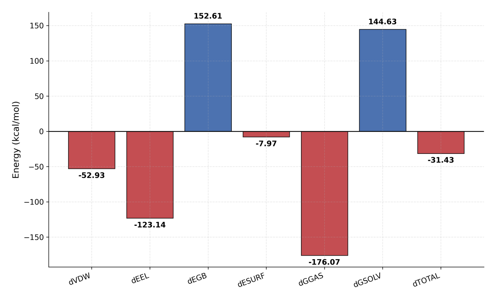
B.7 MM-GBSA + Per-residue
Ste2 + pep5 MM-GBSA results:
Per-residue decomposition (63 interface residues):
Key residues on the Ste2 receptor side (ECL2/ECL3 regions):
| Region | Residues |
|---|---|
| N-terminal region | ILE29, LEU44, SER47, THR48, GLN51 |
| ECL2 | TYR98, TYR101, LEU102, TYR106, SER107, TYR111, ALA112, LEU113, THR114, GLY115, PHE116, ILE120, TYR128 |
| ECL3 | VAL191, THR192, ASP195, VAL196, SER197, ALA198, THR199, GLN200, ASP201, LYS202, PHE204, ASN205, ALA206, SER207, THR208, ILE209, LEU211 |
| TM7 | LEU264, ALA265, TYR266, SER267, LEU268, LYS269, PRO270, ASN271, GLN272, GLY273, THR274, ASP275, VAL276, LEU277, THR278, THR279 |
All 12 residues on the pep5 ligand side:
PHE1, HSD2, LEU3, LEU4, GLN5, LEU6, LYS7, PRO8, GLY9, GLN10, PRO11, MET12
The Ste2 + Gpa1 coupling was not run: listed as Future Work.
B.8 Model-to-Wet Lab Validation: Ste2 Gating Construct Assembly
Bridging Dry and Wet Lab: From Prediction to Construction
Our computational screening evaluated 8 auto-inhibitory peptide variants. Among them, one auto-inhibitory peptide (FHLLQLKPGQPMY) achieved the best HADDOCK score (−99.2). However, for the initial wet-lab assembly, we intentionally selected pep1 (CRGPQLKPGQPMY) as the baseline gating peptide. This decision was driven by the fact that pep1 shares an identical C-terminal core (QLKPGQPMY) with the native α-factor pheromone (WHWLQLKPGQPMY). This core sequence is critical for recognition by the native Ste2 receptor, ensuring optimal structural compatibility and membrane trafficking in vivo. The N-terminal extension of pep5 (FHLL...) improved docking scores in silico, but we prioritized the native physiological compatibility for the first wet-lab iteration.
The optimized auto-inhibitory peptide remains our top computationally designed candidate, and a direct comparative functional assay between pep1 and the optimized auto-inhibitory peptide will be conducted in the next phase of the DBTL cycle.
To demonstrate the practical utility of our Path B model, we translated the in silico gating concept into a physical yeast chassis. Based on our docking insights, we selected the auto-inhibitory peptide and fused it with an anti-HA nanobody to the N-terminus of the native Ste2 receptor.
Our model provided the exact sequence blueprint for this complex fusion. As verified in the wet lab, the construct was successfully integrated into the yeast genome. Colony PCR and Sanger sequencing confirmed a 96.90% sequence identity with our computationally designed reference.
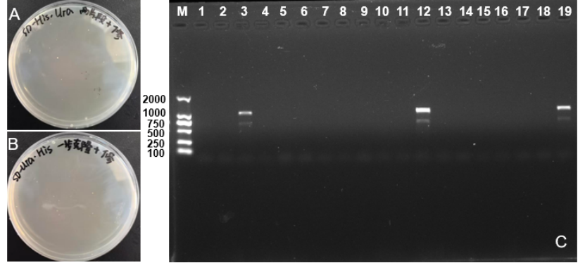
The Closed Loop: This successful assembly bridges our computational predictions and experimental engineering. The model successfully guided the design of a functional, engineered yeast receptor, which is now ready for downstream signaling assays.
Validation & Discussion
Validation and CrossChecking
| Validation dimension | Result |
|---|---|
| ClusPro and HADDOCK rankings are consistent | Both ranked R1aB6 as optimal |
| PyMOL and SPICE independently confirmed interface residues | Consistent |
| 100 ns MD and MM-GBSA are consistent | ΔGbind is stable |
| Positive control redocking | i-RMSD = 2.113 Å |
| Cluster 1 vs Cluster 5 MM-GBSA | ΔTOTAL consistent |
| hM1Dq–Gpa1 total vs single-chain HADDOCK | Single-chain score is better, supporting the simplification decision |
| M1 superposition with predicted hM1Dq | Active sites are consistent |
| Superposition validation before and after OPM processing | Membrane orientation is reliable |
Model-Guided Design
| Model prediction | Design decision |
|---|---|
| R1aB6 has the highest H1N1 specificity | Selected as the recognition element of EchoYeast |
| ARG-B:31 is a hotspot residue (-5.46 kcal/mol) | Propose the R31A mutant as a target for subsequent experiments |
| R2bD9 and R2bE8 have relatively high cross-reactivity risk | Deprioritize |
| The extracellular orthosteric site of hM1Dq is occupied by MT1 | Basis for Path A gating design |
| The intracellular ICL2/ICL3/H8 of hM1Dq is bound by the Gα α5 C-terminus | Coupling interface validation |
| The orthosteric site of Ste2 is occupied by the auto-inhibitory peptide pep5 | Basis for Path B gating design |
Closed-loop design: computational prediction (ARG-B:31 hotspot) → candidate selection (R1aB6) → hypothesis generation (R31A mutant) → experimental validation (SPR + ELISA, future) → model optimization.
Limitations and Failure Analysis
| Limitation | Description |
|---|---|
| All results are computational predictions | Not validated by wet-lab experiments; the ARG-B:31 hotspot and R31A mutant await SPR/ELISA validation |
| Single-chain simplification of hM1Dq + Gα | Does not include Gβγ and may overestimate the conformational stability of Gα |
| Membrane lipid approximation | Approximation of the BY4741 plasma membrane composition; real yeast membranes exhibit microdomain heterogeneity |
| Scoring function limitations | ClusPro/HADDOCK scoring functions are not absolute binding free energies and cannot be directly compared across different targets |
| Implicit solvent/membrane environment ignored | Docking was performed in vacuum/implicit solvent, without considering the membrane, water, ions, or glycosylation |
| Insufficient sampling | 100 ns may be insufficient to capture slow conformational changes; MM-GBSA SEM 1.27-3.46 kcal/mol |
Detailed Analysis of Failure Causes
- hM1Dq + Gpa1 total CHARMM-GUI failure: The Gpa1 trimer was misidentified as a continuous long chain; a 25 Å long bond appeared between residues 512–513; minimization Fmax = 16839, ultimately Exit 139; fix: truncate residues 461–512 and switch to a single chain.
- Accidental incorporation of CHL1 cholesterol: In one CHARMM-GUI run, ergosterol was mistakenly replaced with cholesterol (360 CHL1); corrected after reconstruction.
- Membrane system size limitation: While the hM1Dq + Gpa1 trimer contains 584,325 atoms, the simplified hM1Dq + Gpα single-chain system expanded to ~850,000 atoms due to the requirement for a larger explicit solvent box. Due to computational resource limits and the estimated 2–3 weeks required for a 100 ns simulation, the full single-chain membrane MD was listed as Future Work.
- Ste2 + Gpa1 coupling was not run: listed as Future Work.
- The Ste2 + pep5 complex was simulated without its downstream Gpa1 coupling partner, which may affect the conformational sampling of the intracellular loops.
Membrane MD validation of G protein coupling
This work has completed membrane MD validation for two gating interfaces, hM1Dq–MT1 and Ste2–pep5. For the G protein coupling interfaces (hM1Dq–Gpa1 and Ste2–Gpa1), we have completed HADDOCK semi-flexible refinement and SPICE interface analysis to identify key coupling residues. Because the complete hM1Dq + Gpα single-chain membrane system required a larger simulation box, its total atom count expanded to approximately 850,000 atoms (including explicit solvent). Running a 100 ns MD for this system under our available computational resources would take 2–3 weeks, so we have listed it as next-stage work. The current HADDOCK data (Gpα single-chain score = −149.4, superior to total = −131.7) already support the conclusion that the coupling interface is primarily mediated by Gα.
Reproducibility. Parameters are recorded as follows:
| Item | Content |
|---|---|
| Web server | ClusPro, HADDOCK 2.5 (web + local), GROMACS 2025.2, PyMOL, SPICE, gmx_MMPBSA 1.5.0.3, CHARMM-GUI |
| Force field | Amber99SB-ILDN (HA × nanobody) / CHARMM36m (membrane system) |
| Water model | TIP3P |
| Random seed | gen_seed = -1 |
| MD duration | 100 ns |
| Parameter files | mdp_files/ |
| Code repository | EchoYeast-Modeling on GitHub |
Code and data availability. Software versions, force field, water model, and random seed are listed in the previous section. Per the modelling document, the molecular dynamics parameter files (mdp_files/) and the simulation inputs, parameter files and analysis scripts are available at the project's code repository, EchoYeast-Modeling on GitHub, so that the computational workflow is fully reproducible.
Note: The repository is public. If you encounter network issues accessing GitHub, the source code and parameter files are also available in the iGEM Registry Part pages or upon request.
Best Model Self-Assessment
| Four Key Questions | Evidence | Current Gaps | How to Strengthen |
|---|---|---|---|
| 1. How impressive are the modeling/computational methods? | Integration of 5 independent methods (ClusPro / HADDOCK / PyMOL+SPICE / 100 ns MD / MM-GBSA); parallel modeling of two gating systems; positive control validation | Membrane MD for some systems has not been run (hM1Dq + Gpα single-chain complex) | Listed as Future Work, with resource limitations clearly stated |
| 2. Does it aid understanding, prediction, and design? | Identification of R1aB6 as the optimal candidate; discovery of the ARG-B:31 hotspot; proposal of the R31A mutant; designed the Ste2 gating fusion construct | No wet-lab SPR data for the R31A mutant affinity yet | Propose an SPR + ELISA experimental plan |
| 3. Was it developed/validated using experimental or related data? | Positive control 9VH4 redocking (i-RMSD = 2.113 Å); AF2 vs 5CXV superposition. AND Wet-lab validation: Model-designed Ste2 gating construct (pep + nanobody) was successfully assembled and verified via colony PCR and Sanger sequencing | Construct assembly validated, but functional gating signaling has not yet been tested | Future experiments will focus on the functional fluorescent assay to test the actual gating signaling |
| 4. Can it serve as a good example for others? | Complete workflow, reproducible parameters, GitHub code and data; interactive Card Game demonstration; successfully bridged dry and wet lab | Some MD trajectory raw data remain to be compressed | Continue organizing all raw data and upload everything to GitHub |
Conclusion
The modeling work of EchoYeast embodies the core value of the iGEM computational-first / model-guided strategy. Starting from 17 candidate nanobodies, through a five-stage multiscale workflow of ClusPro → HADDOCK → PyMOL/SPICE → GROMACS → gmx_MMPBSA, combined with positive control 9VH4 redocking validation, we successfully converged on the optimal candidate R1aB6, identified the key hotspot ARG-B:31, and proposed a testable hypothesis, the R31A mutant.
In parallel, we advanced the modeling of two gating systems:
Path A: hM1Dq + MT1 (ΔTOTAL = −40.37 ± 1.27 kcal/mol, 50 interface residues)
Path B: Ste2 + pep5 (ΔTOTAL = −31.43 ± 3.46 kcal/mol, 63 interface residues)
Both gating interfaces (hM1Dq–MT1 and Ste2–pep5) have completed 100 ns membrane MD, MM-GBSA, and per-residue decomposition, and through SPICE interface analysis revealed the specific interaction networks, providing atomic-level structural support for the whole-cell biosensor of EchoYeast.
The value of the model lies not in replacing wet-lab experiments, but in providing precise targets and prioritization for them — this is precisely the direction advocated by the iGEM Best Model Award. All simulation inputs, parameter files, and analysis scripts are available at the GitHub repository, ensuring full reproducibility of the computational workflow.
Note: The repository is public. If you encounter network issues accessing GitHub, the source code and parameter files are also available in the iGEM Registry Part pages or upon request.
References
- Kozakov D, et al. The ClusPro web server for protein–protein docking. Nat Protoc. 2017;12(2):255–278.
- Desta IT, et al. Performance and Its Limits in Rigid Body Protein–Protein Docking. Structure. 2020;28(9):1071–1081.
- Dominguez C, et al. HADDOCK: a protein–protein docking approach based on biochemical or biophysical information. J Am Chem Soc. 2003;125(7):1731–1737.
- Honorato RV, et al. The HADDOCK2.4 web server for integrative modeling of biomolecular complexes. Nat Protoc. 2024;19:3219–3241.
- Abraham MJ, et al. GROMACS: High performance molecular simulations through multilevel parallelism from laptops to supercomputers. SoftwareX. 2015;1–2:19–25.
- Valdés-Tresanco MS, et al. gmx_MMPBSA: A New Tool to Perform End-State Free Energy Calculations with GROMACS. J Chem Theory Comput. 2021;17(10):6281–6291.
- Jumper J, et al. Highly accurate protein structure prediction with AlphaFold. Nature. 2021;596:583–589.
- Mirdita M, et al. ColabFold: making protein folding accessible to all. Nat Methods. 2022;19:679–682.
- Ashraf FB, Lonardi S. Comparative structural analysis of protein complexes with SPICE. Nucleic Acids Res. 2026;54(W1):W321–W326.
- Jo S, et al. CHARMM-GUI: A Web-Based Graphical User Interface for CHARMM. J Comput Chem. 2008;29(11):1859–1865.
- Lomize MA, et al. OPM database and PPM web server: resources for positioning of proteins in membranes. Nucleic Acids Res. 2012;40:D370–D376.
- Pettersen EF, et al. UCSF ChimeraX: Structure visualization for researchers, educators, and developers. Protein Sci. 2021;30(1):70–82.
- Huang J, et al. Nat Methods. 2017;14(1):71–73. (CHARMM36m)
- Klauda JB, et al. J Phys Chem B. 2010;114(23):7830–7843. (CHARMM36 lipid)
- Jorgensen WL, et al. J Chem Phys. 1983;79(2):926–935. (TIP3P)
- Bussi G, et al. J Chem Phys. 2007;126(1):014101. (V-rescale)
- Parrinello M, Rahman A. J Appl Phys. 1981;52(12):7182–7190. (Parrinello-Rahman)
- Essmann U, et al. J Chem Phys. 1995;103(19):8577–8593. (PME)
- Ejsing CS, et al. Proc Natl Acad Sci USA. 2009;106(7):2136–2141.
- Zinser E, et al. J Bacteriol. 1991;173(6):2026–2034.
- van der Rest ME, et al. Microbiol Rev. 1995;59(2):303–322.